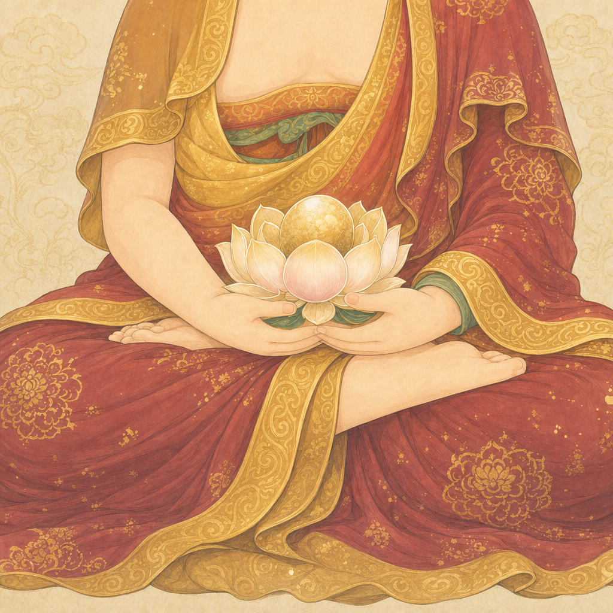
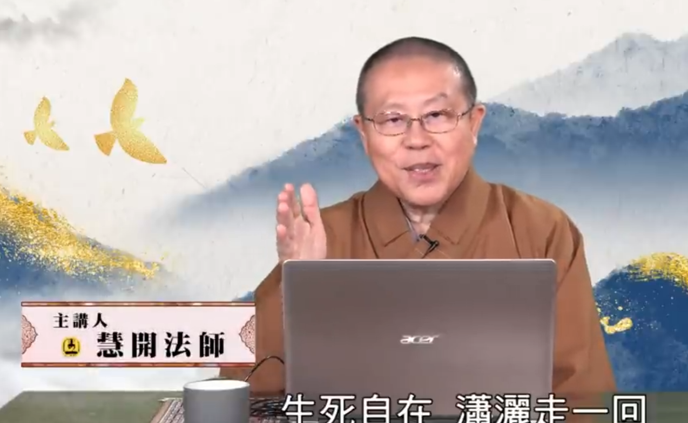

我們懂您此刻的心情
此刻的您，一定很捨不得
失去摯愛的此刻，心裡有太多放不下，腦中卻一片空白。
不知道第一步該做什麼，不知道該相信誰，也害怕在最脆弱的時候被當成生意。這些感受，我們都懂。
別擔心，從現在開始，善果全程陪著您。您只要負責好好陪伴親人，其餘繁瑣的事，交給我們。
讓善果陪您，先聊聊 →
以佛法的智慧與溫度，陪您走過親人臨終的這段路。讓親人安詳，讓您安心，圓滿生死兩相安。
佛化專精．真人全程陪伴．明碼實價
「心無罣礙，
無有恐怖。」
《心經》

24 小時撥打 0939-349-313，林師兄會立即接起電話，一步一步陪您處理眼前的事。
無論深夜或清晨，真人接聽，不轉接語音。
失去摯愛的此刻，心裡有太多放不下，腦中卻一片空白。
不知道第一步該做什麼，不知道該相信誰，也害怕在最脆弱的時候被當成生意。這些感受，我們都懂。
我們是最懂佛教家庭的善終團隊。從臨終助念、引魂誦經到做七迴向，每一步都依佛法而行。理念源自佛光山副住持慧開法師與淨界法師的開示，不是把誦經當配件，而是真正讓亡者安詳往生。
一位專屬禮儀師，從第一通電話陪到圓滿。24 小時都是真人即時回應，不用 AI 客服擋在您和我們之間。我們以發心護持的心服務，給您的是依靠，不是推銷。
分級方案明碼標價，政府規費代收代付，實報實銷，絕不額外加價。費用怎麼算，我們攤開來讓您看清楚。在最艱難的時刻，您不必再為會不會被多收而擔心。
許多人走得很辛苦。反覆的急救與插管，常常只是耗盡親人與家屬最後的精神體力，與善終背道而馳。
善果相信，當醫療已盡力，真正重要的，是讓親人保留體力、維持清醒，在聲聲佛號中安然往生。
這就是善終：坦然接受自然的圓滿，如落葉歸根、瓜熟蒂落。我們把同業少談的善終智慧，完整整理成七大原則，陪每一個家庭，慎重走過這一程。
認識善終的七大原則善果的佛事，依西方三聖的慈悲與智慧而行，引導亡者一心念佛，安然往生淨土。
輕觸佛像，願文從下方緩緩升起

無量光．接引往生
以四十八大願成就極樂淨土，於眾生命終之時，放無量光明，親來接引，令離苦得樂，往生安養。
輕觸收合 ✕
慈悲．傾聽守護
尋聲救苦，慈悲傾聽。以楊枝淨水遍灑甘露，撫平家屬悲傷，守護亡者於中陰路上安然無懼。
輕觸收合 ✕
智慧．光明引路
以智慧光普照一切，都攝六根，淨念相繼。引領亡者一心念佛，不亂不怖，步步走向光明。
輕觸收合 ✕善果的七階段全程服務，讓您在慌亂中始終知道，下一步該怎麼走。
在最關鍵的時刻給予引導，協助助念與第一時間通知。
以恭敬之心接運安置亡者，給予應有的尊嚴。
協助豎靈、設置莊嚴靈堂，溝通各項細節。
依佛法誦經、做七、迴向，護持亡者往生淨土。
莊重圓滿地完成奠禮，讓親友好好道別。
陪同火化、封罐、晉塔，慎重安頓。
禮成之後，依然關心您與家人，陪您走出悲傷。
不必擔心被推銷。費用怎麼算，我們在這裡就告訴您。
虔誠信仰家庭首選，對應完整佛事與誦經，如理如法護持亡者往生淨土。
大眾首選，現代與傳統並重，含各項證件協助辦理。
簡約而圓滿，適合樹葬、花葬、海葬等環保自然葬法。
為基督教、天主教家庭，依信仰禮儀莊嚴安排。

慧開法師
「善終是大自然賦予生命的機制，如春夏秋冬，自然而圓滿。當醫療已無策時，把關懷的重心，從肉體轉向心靈與靈性。」善果的服務理念，源自佛光山副住持慧開法師與淨界法師的開示
「最慌亂的那一夜，是林師兄的一通電話，讓我們全家定下心來。」
家屬故事陸續徵集中無論您是親人剛往生需要立即協助，或是想為未來預先規劃，撥一通電話，或加一個 LINE，都好。我們在這裡，等您。